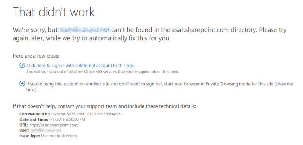
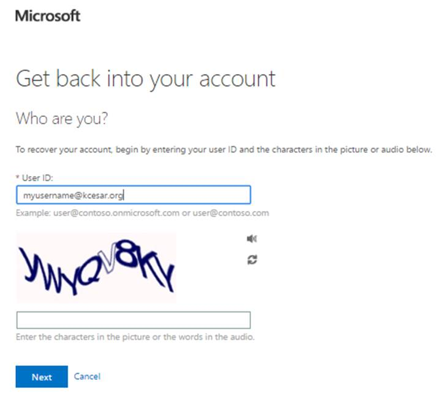
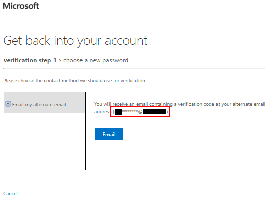
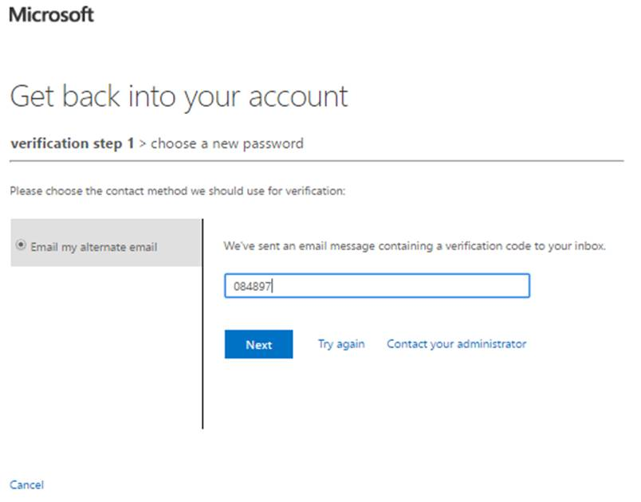
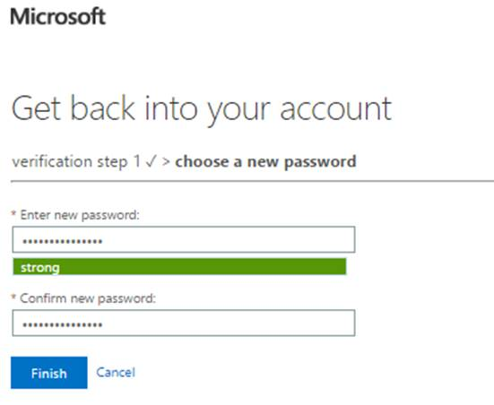
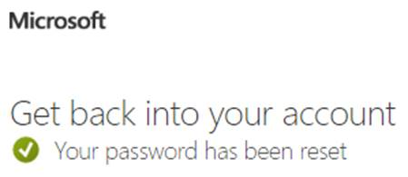

Member Resources
New Member Site!
Click Here to go to the New Members Site
Document Quick Access
Code of Conduct: Forms:- Sign-In Roster
- Sign-In Roster (Covid)
- Team Assignments
- Team Activity Log (Covid)
- Communications Log
- Medical Safety Officer Checklist (Covid)
SarTopo
- Log in at kcesar.org/sartopo, or via https://login.kingcountysar.org/
- CalTopo App Team Acocunt Login Instructions
CARE Team
The mission of the CARE Team is to advocate for the resiliency of SAR volunteers throughout the mission cycle and to prepare members to cope with traumatic stress by proactively training members to be resilient and reactively supporting rescuers after critical incidents in order to prevent stress injuries.
https://sarcareteam.wixsite.com/home
King County Search & Rescue Database
This is the King County Search & Rescue Association Database. It includes Member, Mission, and Training data:
- Mission & Training Rosters
- Member Contact Information
- Member Training Records
For records prior to January 1st, 2021 please see: https://database.kcsara.org/ (Read Only)
KCESAR Sharepoint
This is the King County Explorer Search & Rescue SharePoint. It is used to store/distribute unit documents/resources:
- Unit Bylaws
- Code of Conduct
- Trading Post Information (ESAR Gear)
- OL Duty Schedule
Office 365
In order to access ESAR's online resources you will need to know your Office 365 User Name and Password. New members will receive login information shortly after completing basic training. Your username will end in @kcesar.org. When you first visit the site you will be asked to log in. If you are presented with a choice between using a Work or Personal account, choose the "Work or school account."

Troubleshooting
- If you've forgotten your password, it can be reset using the instructions below.
- If you were already logged in with a Microsoft account that's not part of ESAR (doesn't end in @kcesar.org) you will likely see the screen below. As described in the error message, you will either need to log out of your other account first or open a new browser window (or new private browsing window) in order to continue. 
- Questions about accessing these resources can be directed to secretary@kcesar.org or webmaster@kcesar.org.
Reset Office 365 Password
- Access https://passwordreset.microsoftonline.com
- Enter your ESAR email address (ex: myusername@kcesar.org) and the "I'm not a robot" text: 
- The next screen should give you the option of sending a verification code to your alternate e-mail address. This email should be the one where you receive your ESAR emails (@gmail.com, @comcast.net, etc.). It should not end in @kcesar.org: 
- Wait a few minutes for a verification code to be sent to your personal email. Type or copy/paste this code into the verification box and press "Next": 
- Enter your new password and click "Finish". The password should be less than 16 characters: 
- The password reset is complete: 